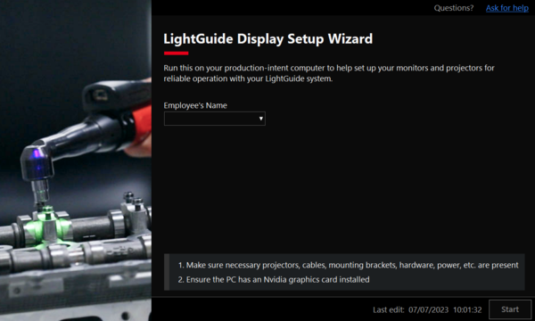
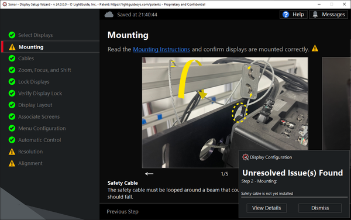
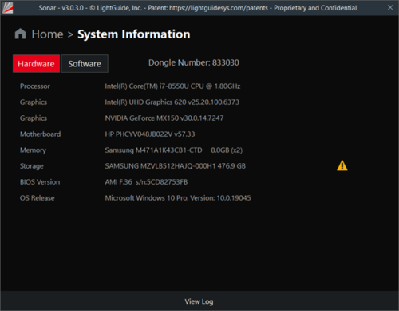
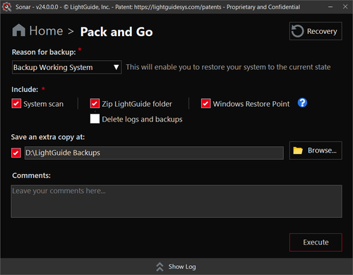
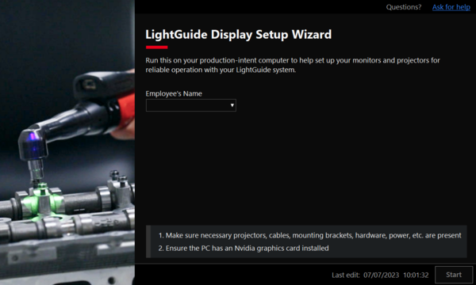
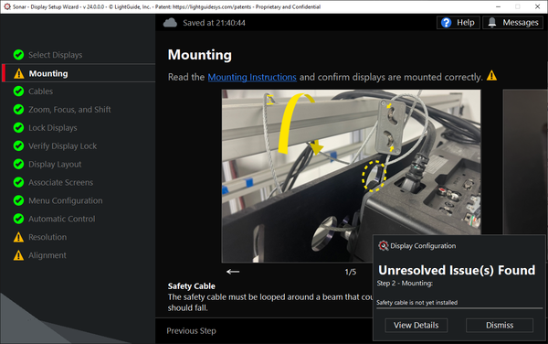
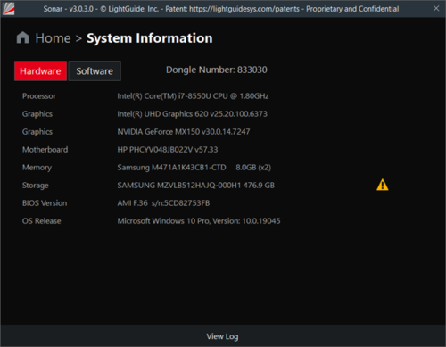
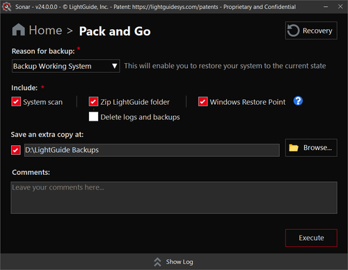

Sonar: Automated Diagnostic & Troubleshooting Tool
 

\



\

Project Overview
Sonar is a patent-pending configuration and diagnostic tool I originally developed as an intern and have since evolved into a mature, production-grade application used throughout the organization. Created to support the deployment and maintenance of augmented reality systems, Sonar automates complex system provisioning, monitors performance over time, and simplifies hardware integration across a wide range of environments.
Today, it's an essential component in our AR software suite, used by the operations team for every system deployment. My undergraduate thesis focused on the development and innovation behind Sonar, showcasing its transformation from an internal utility into a widely adopted enterprise tool.
Technical Implementation
Key Features
Automated System Provisioning: Automates previously manual steps in configuring Windows settings and registry values to prepare systems for AR use, eliminating human error and reducing setup time.
AR Display Configuration Wizard: Offers a step-by-step interface to guide users through setting up multi-monitor and projector environments, including replacing existing hardware with minimal disruption.
Real-Time System Diagnostics: Analyzes hardware and software configurations to surface key system data, empowering support teams with deep visibility into deployed machines.
Change Monitoring & Impact Alerts: Performs periodic scans to detect system changes since the last scan, flagging potential performance-impacting modifications with severity indicators.
Enterprise-Scale Usability: Fully adopted by the operations team for every AR system deployment, ensuring consistent configuration and dramatically improving setup scalability.
Results & Impact
The implementation delivered measurable improvements across multiple key performance indicators:
- Universal Adoption Across Deployments
- Dramatic Reduction in Setup Time & Errors
- Long-Term Maintainability & Performance Insight
From Internship to Core IP: Developed as an intern project and grown into a patent-pending enterprise tool, Sonar showcases my ability to identify critical gaps, build scalable solutions, and see them through to long-term impact.
Challenges & Solutions
Challenge: Manual configuration was error-prone and inconsistent across systems
Solution: Built a reliable automation engine that interfaces directly with Windows system APIs and registry to enforce configuration standards.
Challenge: Complex AR setups required custom multi-display arrangements, often involving multiple monitors and projectors
Solution: Created an intuitive setup wizard that abstracts complexity and enables repeatable, user-friendly display configuration workflows.
Challenge: Lack of visibility into deployed system health over time
Solution: Integrated a scanning and diagnostic system that captures system state, flags deviations, and provides insights into potential performance regressions.